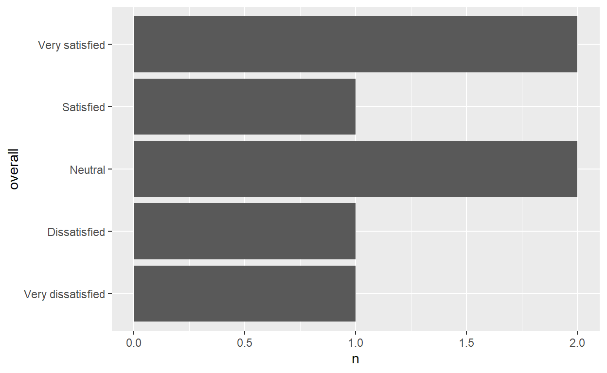
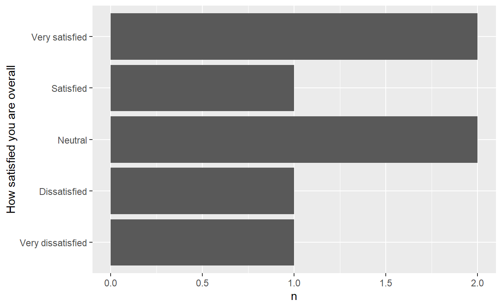
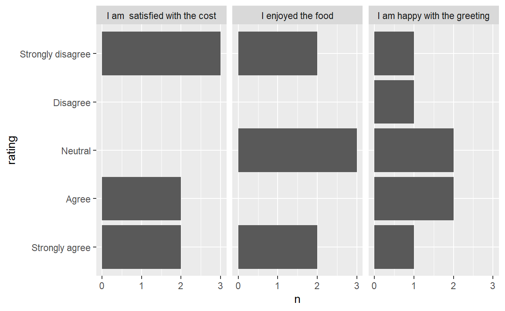
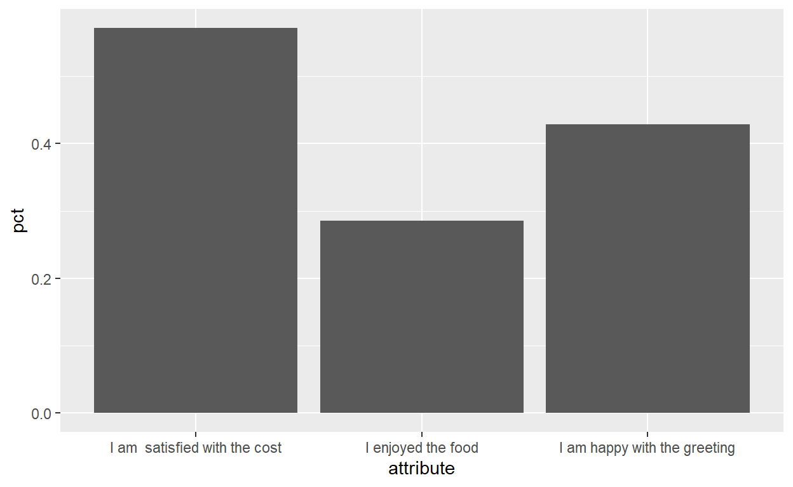

The Libraries
I usually work with survey data that come in the form of a spreadsheet (usually from google forms).
The variable names are long and highly descriptive of what information the variable contains, but that long of a name, makes it very hard to work with while wrangling the dataset.
What I want is to keep the original variable name as a label and rename the variable names with new names
To demontrate my workflow, I created a sample dataset to work with. You can download it from github
The dataset is stored as an excel file, and has two worksheets.
- In the worksheet
datayou can see the raw data, and
- In the worksheet
labelsyou can find a sort of data dictionary
In the labels worksheet I keep a record of the original variable names as label and on the adjacent column, I type a short but readable column name for the variable.

Read the data and data-dictionary
Let’s read in the data
Rows: 7
Columns: 6
$ id <dbl> 1, 2, 3, 4, 5, 6, 7
$ `Which restaurant have you visited?` <chr> "Limassol", "Nicosia...
$ `I am happy with the greeting` <chr> "Agree", "Strongly d...
$ `I enjoyed the food` <chr> "Neutral", "Neutral"...
$ `I am satisfied with the cost` <chr> "Agree", "Strongly d...
$ `How satisfied you are overall` <chr> "Very satisfied", "V...The dataset contains 6 columns
Read in the labels worksheet for the column dictionary
dta_labels <- readxl::read_xlsx(path, sheet = "labels")
dta_labels
# A tibble: 6 x 2
label name
<chr> <chr>
1 id id
2 Which restaurant have you visited? restaurant
3 I am happy with the greeting greeting
4 I enjoyed the food food
5 I am satisfied with the cost cost
6 How satisfied you are overall overall Now,
- Change the column names of the dataset to the short names in the dictionary
- Set the
labelsof the columns via thelabelled::var_label()function - Create a
label_listobject, which is a named list where the names of the list are variablenamesand the values of the list are the variablelabels - Also, save a
label_vectornamed vector with the same informationas thelabel_list
names(dta) <- dta_labels$name
var_label(dta) <- dta_labels$label
labels_list <- var_label(dta)
labels_vector <- var_label(dta, unlist = TRUE)
labels_list
$id
[1] "id"
$restaurant
[1] "Which restaurant have you visited?"
$greeting
[1] "I am happy with the greeting"
$food
[1] "I enjoyed the food"
$cost
[1] "I am satisfied with the cost"
$overall
[1] "How satisfied you are overall"Have a look at the dataset names now
glimpse(dta)
Rows: 7
Columns: 6
$ id <dbl> 1, 2, 3, 4, 5, 6, 7
$ restaurant <chr> "Limassol", "Nicosia", "Nicosia", "Larnaka", "...
$ greeting <chr> "Agree", "Strongly disagree", "Neutral", "Neut...
$ food <chr> "Neutral", "Neutral", "Strongly agree", "Neutr...
$ cost <chr> "Agree", "Strongly disagree", "Agree", "Strong...
$ overall <chr> "Very satisfied", "Very dissatisfied", "Neutra...Now its very easy to keep using the variable names in your code, but variable labels are rendered in the tables when using {gtsummary} for example.
dta %>%
select(overall,restaurant) %>%
tbl_summary(
by = restaurant
)
| Characteristic | Larnaka, N = 11 | Limassol, N = 21 | Mall, N = 11 | Nicosia, N = 21 | Pafos, N = 11 |
|---|---|---|---|---|---|
| How satisfied you are overall | |||||
| Dissatisfied | 0 (0%) | 0 (0%) | 1 (100%) | 0 (0%) | 0 (0%) |
| Neutral | 0 (0%) | 0 (0%) | 0 (0%) | 1 (50%) | 1 (100%) |
| Satisfied | 1 (100%) | 0 (0%) | 0 (0%) | 0 (0%) | 0 (0%) |
| Very dissatisfied | 0 (0%) | 0 (0%) | 0 (0%) | 1 (50%) | 0 (0%) |
| Very satisfied | 0 (0%) | 2 (100%) | 0 (0%) | 0 (0%) | 0 (0%) |
|
1
Statistics presented: n (%)
|
|||||
Factors and order of the value labels
The order of the satifaction levels in the previous table, is not the most appropriate. It should read from Very dissatisfied down to Very satisfied.
One way to accomplish this is to turn the variable into a factor. However, one problem arises now, where the label for the overall variable is gone. That is an inherent behaviour of dplyr::mutate() where it removes these attributes off of the variables that you manipulate.
See the overall title in the table below
# change `overall` to factor
dta <-
dta %>%
mutate(
overall = factor(overall,levels = c("Very dissatisfied", "Dissatisfied", "Neutral",
"Satisfied","Very satisfied"))
)
dta %>%
select(overall,restaurant) %>%
tbl_summary(
by = restaurant
)
| Characteristic | Larnaka, N = 11 | Limassol, N = 21 | Mall, N = 11 | Nicosia, N = 21 | Pafos, N = 11 |
|---|---|---|---|---|---|
| overall | |||||
| Very dissatisfied | 0 (0%) | 0 (0%) | 0 (0%) | 1 (50%) | 0 (0%) |
| Dissatisfied | 0 (0%) | 0 (0%) | 1 (100%) | 0 (0%) | 0 (0%) |
| Neutral | 0 (0%) | 0 (0%) | 0 (0%) | 1 (50%) | 1 (100%) |
| Satisfied | 1 (100%) | 0 (0%) | 0 (0%) | 0 (0%) | 0 (0%) |
| Very satisfied | 0 (0%) | 2 (100%) | 0 (0%) | 0 (0%) | 0 (0%) |
|
1
Statistics presented: n (%)
|
|||||
You can easily solve this, using the labelled::set_variable_names() function. This function can be used in the dplyr chain since it takes a data argument.
What you need to use is the labels_list we have saved before and pass it in the .labels argument of the set_variable_names()
dta <-
dta %>%
set_variable_labels(.labels=labels_list) #After mutating, the label information of the `overall` variable is gone.
dta %>%
select(overall,restaurant) %>%
tbl_summary(
by = restaurant
)
| Characteristic | Larnaka, N = 11 | Limassol, N = 21 | Mall, N = 11 | Nicosia, N = 21 | Pafos, N = 11 |
|---|---|---|---|---|---|
| How satisfied you are overall | |||||
| Very dissatisfied | 0 (0%) | 0 (0%) | 0 (0%) | 1 (50%) | 0 (0%) |
| Dissatisfied | 0 (0%) | 0 (0%) | 1 (100%) | 0 (0%) | 0 (0%) |
| Neutral | 0 (0%) | 0 (0%) | 0 (0%) | 1 (50%) | 1 (100%) |
| Satisfied | 1 (100%) | 0 (0%) | 0 (0%) | 0 (0%) | 0 (0%) |
| Very satisfied | 0 (0%) | 2 (100%) | 0 (0%) | 0 (0%) | 0 (0%) |
|
1
Statistics presented: n (%)
|
|||||
Important to say that:
Using the
labels_listobject we do not worry about the order of the variables as the matchingis done on the names of the variables.There is no problem if the data has more variables than what the
labels_listcontains as long as all the variables contained in thelabels_listare also in the dataset we want to label
Plots
Axis titles
Here, we want to utilise the labels we stored on the labels_list when defining axes title labels.
Here is the plot with the default varible names as the xes title labels
plot_overall <-
dta %>%
count(overall) %>%
ggplot(aes(overall, n))+
geom_col()+
coord_flip()
plot_overall

labels_list
plot_overall +
labs(x=labels_list[["overall"]])

Facet strip labels
Here, we will utilise the labels_vector to show descriptive labels in the facet_warp strip texts
Usually, with these kind of questions(a series of likert scale questions), I want to plot many questions at the same plot. One way to do this is by tranforming all the data into a long format and get the counts (or proportions) of ech response to each question in a long table. Then we plot it by faceting the graph by the question.
faceted_plot <-
dta %>%
select(greeting, food, cost) %>%
pivot_longer(everything(),
names_to = "attribute",
values_to= "rating") %>%
count(attribute, rating) %>%
mutate(
rating = factor(rating, c("Strongly agree", "Agree", "Neutral", "Disagree", "Strongly disagree"))
) %>%
ggplot(aes(rating, n))+
geom_col()+
coord_flip()+
facet_wrap(~attribute)
faceted_plot

When using facet wrap in ggplots we get the values of the facet column in the strip text. However, since the facet column is actually a column that holds the question, it would be great to have the long label in the facet strip instead of the short name.
Thankfully we don’t have to do this manually. We can utilise the label_vector we saved earlier, and the underated ggplot function as_labeller (or sometimes the labeller function).You can read more about as_labeller and labeller for many more (and more usufull) use cases.
faceted_plot+
facet_wrap(~attribute,labeller = as_labeller(labels_vector))

Axis text labels
Here we will change how the levels in the axis ticks are displayed.
Im my workflow, very often I need to plot proportions (or other summary statistic) of many items in the survey. Let’s assume we need to plot the proportion of respondents who answered positively ie.. Strongly agree or Agree in the rating questions greeting, food and cost.
One way of doing this:
-1. Gather all rating questions (lets call them attributes) into a long format table with 2 columns - attribute and the rating for that attribute. -2. Indicate if the rating is positive ie. Agree/ Strongly agree -3. Count tne occurrences of positive rating
# Table of good rating percentages
tbl_pct <-
dta %>%
select(greeting, food, cost) %>%
# step 1
pivot_longer(everything(),
names_to = "attribute",
values_to= "rating") %>%
# 2. If Agree/strongly agree then `1` or `0`
mutate(rating = if_else(rating %in% c("Agree","Strongly agree"),1, 0)) %>%
# 3.Count the occurrences andget proportion
count(attribute, rating) %>%
group_by(attribute) %>%
mutate(pct = n/ sum(n))
#the plot
plot_pct <-
tbl_pct %>%
# keep only the `1`s i.e. the proportion of agree/sstrongly agree
filter(rating ==1) %>%
ggplot(aes(attribute, pct))+
geom_col()
plot_pct

Now, we need to change the cost, food and greeting with appropriate text
I usually use the scale_*_discrete function. There you can define the labels as a named list or a named vector
plot_pct+
scale_x_discrete(labels = labels_list) # or labels_vector. Both will work
